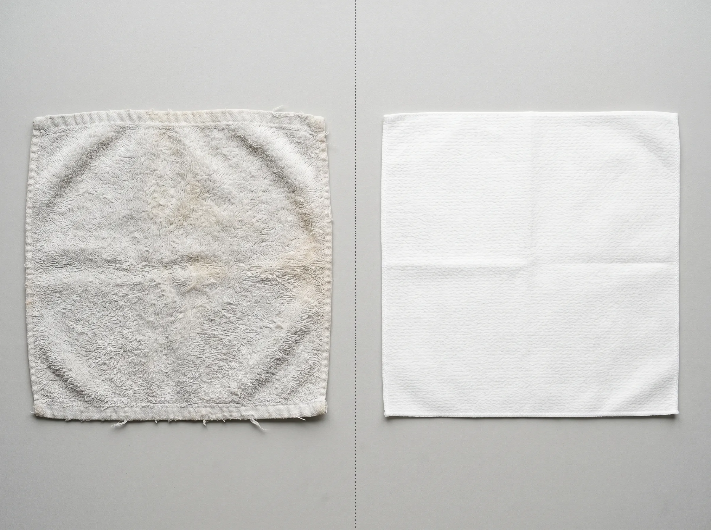

New Research: The Hidden Cause of Adult Acne Is Hanging in Your Bathroom Right Now
Peer reviewed research has been quietly building a case against a part of your routine you've probably never questioned. We looked at the data and talked to estheticians. The fix turned out to be smaller, and cheaper, than we expected.
Our test panel reported visibly calmer skin within seven to ten days of the swap.
As seen in


It started with a text from a friend.
Six weeks into a new skincare routine (a $40 cleanser, a $65 serum, a prescription retinol from her dermatologist), her cystic acne wasn't getting better. It was getting worse. She'd done everything right. She'd cut dairy. She'd switched pillowcases to silk. She'd thrown out makeup that was past its date.
"Honestly," she typed, "I don't know what else to do."
We get that text a lot. Variations of it, anyway. And until recently, our answer was the usual: see a different dermatologist, add a hydrocolloid patch, try azelaic acid. But over the last year, we've been hearing the same surprising suggestion from estheticians. It sounds too small to matter, until you look at the research.
The suggestion is this: look at the towel hanging next to your bathroom sink.
Your $40 cleanser is being wiped off with a bacteria sponge
That phrase isn't ours. It's how one esthetician described it to a reader who later left a comment on a popular TikTok video about facial towels. We saw it, screenshotted it, and started digging.
Here's what the science actually says. We want to walk through this carefully, because there are real numbers behind a claim that initially sounds like clickbait.
Microbiologist Dr. Charles Gerba at the University of Arizona has spent decades studying household contamination. In testing across hundreds of homes, his research found that roughly 90% of bathroom towels showed coliform bacteria. That's the family of bacteria that includes the kinds you really don't want anywhere near your face. This isn't a rare problem. This is the average bathroom towel.
90%
of bathroom towels carry coliform bacteria, per University of Arizona research on household textile contamination.
A 2023 study published in Scientific Reports (Nature) examined biofilm formation on household textiles over a six month period. The finding: biofilms (sticky bacterial communities) begin forming on towels within weeks of regular use, even when those towels are washed regularly. The loop structure of cotton terry physically traps and shelters microbes in a way other fabrics don't.
If you've been pressing your face into the same towel for the last month and a half, you've been pressing it into a thriving microbial environment. And then you've been doing it again the next morning.
The simple swap that fixes it
One use, then it goes. No bacteria. No laundry. No transferred residue.
"But I wash mine every week"
This is the first thing everyone says when they hear the bacteria number. It's also the first thing the research dismantles.
Standard residential wash cycles, especially in modern energy efficient machines that don't reach high temperatures, leave behind a measurable percentage of viable bacteria. Detergent isn't a disinfectant. Microbiologists have repeatedly shown that mature biofilms cling to towel fibers and survive wash cycles that would clean other fabrics fully.
There's a second layer to this most people miss. Fabric softener and dryer sheets, the products that make your towel feel "extra clean," coat fibers in a thin waxy film. Many of the compounds used (quaternary ammonium compounds, synthetic fragrances) have been documented in peer reviewed dermatology research as triggers for contact dermatitis, irritation, and acne flare ups in reactive skin.
So your "clean" towel isn't sterile. And the chemicals making it feel clean are themselves a documented skin irritant. The math doesn't work in your favor.

What this means for your skincare routine
Every product you apply is being wiped off against a bacterial film, with a fabric coated in irritant residue, dragged across your skin twice a day. For most people with normal skin, this is annoying but not catastrophic. For anyone with acne prone, sensitive, eczema prone, post procedure, or rosacea prone skin (the people who actually buy expensive skincare), the towel may be undoing more than it's helping.
What estheticians say actually matters (and what they say doesn't)
We asked five licensed estheticians the same question: "If a client came to you with persistent adult acne and a perfect on paper routine, what would you change first?" Their answers overlapped remarkably.
What they said matters
- Contact surfacesYour towel, your pillowcase, your phone screen
- Single use whenever possibleEspecially for the post cleansing pat down
- Fabric chemistryChemical free, fragrance free, dye free
- Soft textureNo friction abrasion on compromised barriers
What they said is overrated
- "Spa grade" face clothsBetter than terry, but still need laundering
- More expensive cleanserDiminishing returns past $20 to $25
- Sheet masks for acneMostly hydration theater
- Triple cleansingOver cleansing damages the same barrier you're trying to protect
What we recommend (and use ourselves)
You can buy disposable facial towels from a few brands now. The category leader, Clean Skin Club, makes a good product, but it's positioned as a luxury upgrade. We started recommending Fomin Clean Facial Towels instead, for three honest reasons: they cost less (roughly half the price), they're extra large and plant based, and every pack offsets ocean bound plastic bottles through Fomin's Plastic Bank partnership.
Here's where most "miracle product" articles get evasive. We won't.
The product is Fomin Clean Facial Towels. One box of extra large, plant based, single use facial towels. The math, honestly:
The towels also bundle with Fomin's broader skincare line (soap tablets, cold shower wipes), so you can stack toward the free shipping threshold without buying multiple boxes.
Try the swap
One small change. No new routine. Less than a fancy coffee per week.
Shop Fomin Clean Facial Towels →What customers are saying
Selected from verified buyer reviews. Reviews may be lightly edited for length.
"My daughter suffers with really bad acne. Using wash cloths was only transferring bacteria onto her face. These towels are amazing. Very sturdy and feels great on the skin. We take them wherever we go now."
Ariana Redmond · Verified buyer
"Perfect for travel and great for removing makeup, these textured towels clean well and yet are soft enough for my sensitive skin. I love having them when I'm out and about and I need something clean to freshen up."
Maisie Branson · Verified buyer
"Great swap from old makeup wipes. I will buy these forever. No dyes or other chemicals, so great for sensitive skin. Skin is left super clean, never cause acne. Big enough to cut in half to get more for your money."
Eliam Winslow · Verified buyer
"I bring these face towels with me when I travel and go camping. They work perfectly removing any dirt off my face and neck and I am able to rinse it out and reuse it again. One side works for exfoliating and the other side is smooth for quick wipe down. The towels are very soft and worked great for my sensitive skin. I always keep a few in my car and bag."
Andrew Bishop · Verified buyer
Reader questions
From comments and DMs on our recent TikTok and Instagram posts. Answered by our editorial team.
Is this really better than just throwing my towel in the wash every other day?
Honestly, yes. The research on biofilm survival through wash cycles is the reason why. A washed towel isn't sterile, and the fabric softener residue itself is a documented skin irritant. Single use removes both problems at once. That said, if your skin isn't reactive and washing works for you, you might not need a swap.
Are these basically the same thing as Neutrogena face wipes? Trying to figure out if I'm doubling up.
No, and this is a great question to flag, because they sound similar but work the opposite way. Face wipes are pre soaked in chemicals (surfactants, fragrance, preservatives) and clean by chemistry. Fomin towels are completely dry and chemical free. You add your own cleanser, toner, or just water. Most dermatologists prefer the dry approach because nothing extra touches your skin.
Sensitive skin and rosacea. Is this safe? My face reacts to literally everything.
Yes, and they're widely recommended for reactive skin types specifically. The towels are 100% plant based, OEKO-TEX certified, and free from fragrance, dyes, alcohol, and other common irritants. Because nothing's pre loaded into the fabric, you control exactly what touches your skin. If you have specific ingredient sensitivities, patch testing is always a good idea.
Your skincare deserves a clean place to land
The smallest swap in your routine. The one that might actually move the needle.
One small change. No new routine, no learning curve. And every pack helps stop ocean bound plastic bottles from reaching our oceans through Plastic Bank.